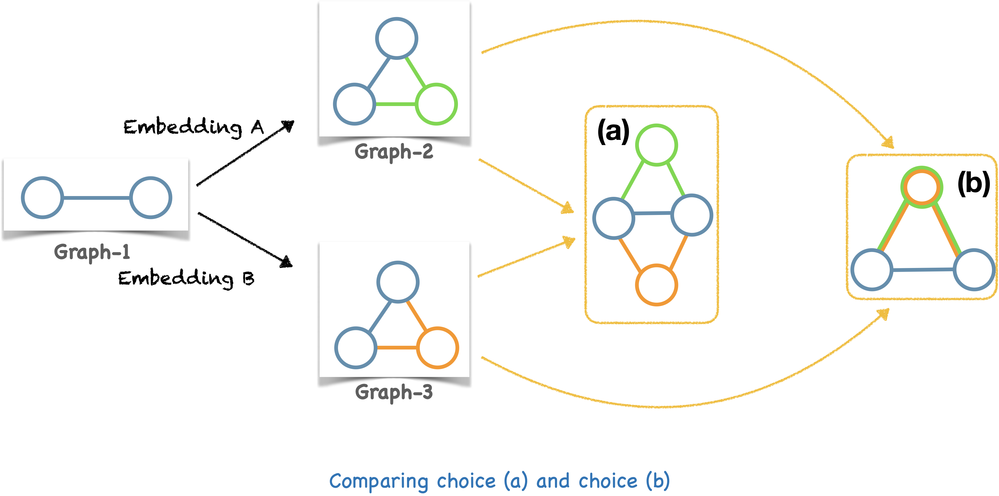
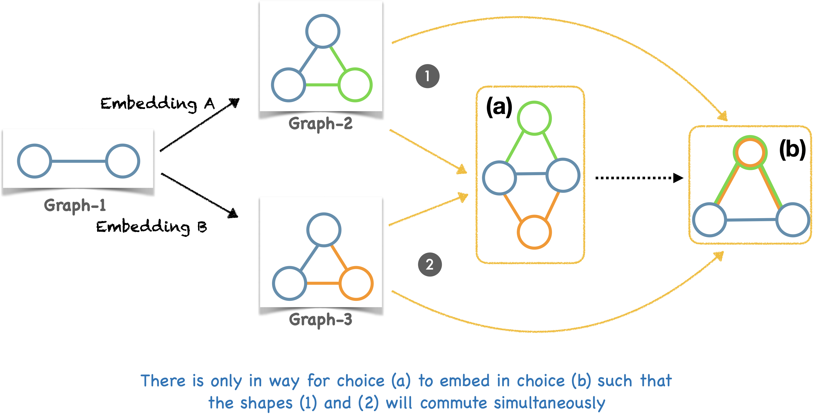
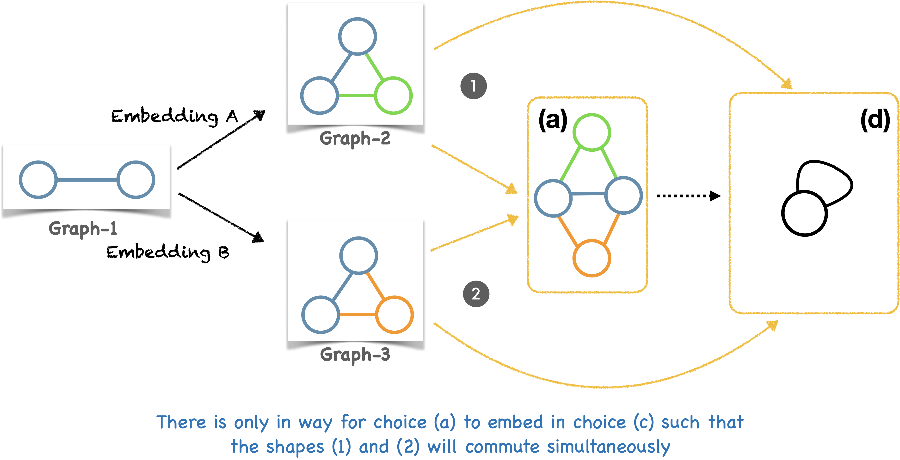
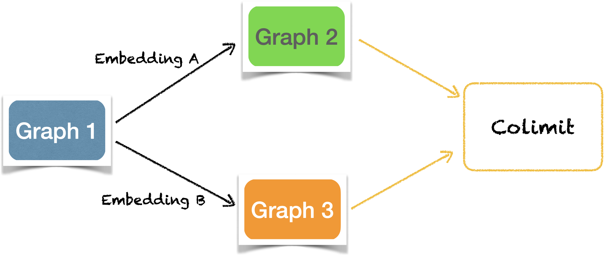

Chapter 5: Graph gluing using pushout#
Attention
This chapter will engage you in deep relational thinking!
So far, we have seen that graphs are a quite simple and powerful tool to model relationships between various entities. We also learnt the idea of identifying one graph inside another via a graph morphism. A graph morphism may coarse-grain the information in the domain graph by sending two different vertices/edge of the domain to the same vertex/edge in the codomain but it always preserves the connectivity of the domain. Finally, excitingly, with graph morphisms, we enter the “universe” where we can find every possible “graph-world” and the every possible relationships between these worlds. In this chapter, we “live” inside this universe where the only entities are graphs and morphisms between them.
Inside this universe, we are interested in the mechanism of combining two graphs, like adding two numbers (if this analogy sounds odd to you, towards the end of this chapter we will see that adding numbers is same as combining two discrete graphs). The utilitiy of combining graphs is to bridge islands of connections allowing for information to flow between the graphs (via common channels) and for expression of new meanings.
As a step towards making sense of the idea of combining graphs, let us a revisit a graph that we met in the first chapter — “Whose turn is it to do dishes?”.

In this graph, Paul claimed to be friends with Tuco (to our unaware readers, Tuco is Paul’s neighbor’s cat). Paul is also a friend of Brendan, Angeline and myself (co-authors of this book). Encoding these friendships as graphs, we got:

Read each edge in the above graphs as “is a friend of”. Combining the above two friendship graphs along the common vertex Paul into a single friendship graph, we get:

We see new information emerging in the combined graph. Tuco “is a friend of a friend” for Brendan, Priyaa, and Angeline. If we assume that a friend of a friend is a friend, then one can infer that Tuco “is a friend of” Brendan, Angeline and Priyaa. The connections in the combined graph supports such assumptions and inferences.
The above example is deceivingly simple. By eyeballing the two friendship graphs, it is easy to see by common experience how the graphs can be combined. But, graphs generated in the real world are quite complex. In practice, combining such graphs using pen and paper is out question! However, it is the same common sense in play combining even the most complex graphs [1].

The goal of this chapter is to make our inherent sense of combining graphs more explicit and fun! Once explicit, we all can agree unambiguously what does it mean to combine two graphs together. We will achieve this goal by playing a game of dumb charades of graphs using memes from relational thinking. Relational thinking is popularly known as category theory in the mathematics community!
The challenge of this game is to communicate “the connectivity of any combined graph” without explicitly saying what the graph is! This is because, while in the universe we can talk about relationships between graphs. Once we look inside a graph, we will no longer be in the universe but we would be inside a graph-world which is unaware of any other (graph) worlds. A combined graph needs to be aware of graphs which it combined (otherwise it just any old graph). So, we need to stay in the level of universe to talk about combining graphs!
[FROM HERE, THE NEXT TWO SECTIONS MUST BE INTRODUCED IN CHAPTER 4.]
We said that we are going to use memes from relational thinking to play this game. Sections 2 and 3 will introduce two such memes from relational thinking.
5.1. Combining graphs using memes#
The two memes we will use to play this game are, 1. Commuting diagrams, and 2. Graph isomorphisms.
Having explored the idea of commuting diagrams and sameness in the previous chapter, we are now ready to play our game of dumb charades of graphs! The goal of the game is to describe what a combined graph of any two (overlapping) graphs is without saying what the vertices, edges, source and target maps of the combined graph are! Given two overlapping graphs, let us call their combined graph as the “pushout” of the two graphs along the overlap.
A pushout is a graph in the space of all possible graphs. We need to spot what graph it is! We will narrow down our search step-by-step by expressing requirements of a pushout using the memes we have learnt. We will continue this process until we end up with the graph we are looking for.
We will draw lots and lots of diagrams for this narrowing down process! Diagrams are basic to relational thinking!
Let us begin!
5.1.1. Shape of the overlap#
To combine two graphs, we first need to know which vertices and edges are common to both the graphs. Recollect that the “Paul” vertex was common to both the friendship graphs we met early in the chapter. Let’s call the common vertices and edges as the overlap of the two graphs. So, to combine two graphs, we need to know their overlap.
We saw in previous chapters that a graph morphism identifies one graph inside another. Let us suppose we have three graphs, and two morphisms as shown in the diagram below. Let us not worry what exactly Graph-1, Graph-2, Graph-3! Remember, we live in universe and do not peek inside graphs! The rectangles are placeholders which can receive any graph in them.

The relationships between the graphs in the above diagram are:
Graph-1 maps into Graph-2.
Graph-1 maps into Graph-3.
Thus, the regions in which Graph-1 embeds, Graph-2 and Graph-3 overlap.
The “overlap” acts as a bridge between two graphs. Theoretically, presence of an overlap means that we can navigate from one graph to the other via common vertices and edges. That is, we can combine Graph-2 and Graph-3 into a single graph. This idea of a combining graphs can be loosely illustrated as sticking together two sheets of paper using glue.

Another (closer) analogy that comes to mind for combining graphs is glueing a broken handle to a tea cup using two pieces of glue.

With this analogy in mind, let us think of the pushout of a diagram with two graphs and their overlap as shown above. The diagram in Figure 1 has all the information about the graphs to be combined and their overlap. Hence, we say “colimit graph of a diagram” similar to how we say “sum of two numbers”.
Key points
We now know what it means for two graphs to overlap — it is a diagram of two radiating graph morphisms.
Overlapping graphs can be glued together.
5.1.2. Combining Graphs along overlap#
Now that, we know the overlap, the next step in this game is to narrow down the candidates for the pushout. Right now, it could be any graph in the universe!
We cannot talk about pushout (graph) individually in terms of its source and target maps since we are in Rung 4. Hence, we will look at the pushout from the perspective of some other graphs. That is, we are going to ask a few other graphs we are familiar with (in this setting) that,
How is the pushout related to you?
An old spanish saying goes like this. Tell me who your friends are, and I will tell you who you are!
The most immediate candidates for this enquiry are Graph-2 and Graph-3 since the pushout is given by combining Graph-2 and Graph-3 (along Graph-1 overlap).
Pause and ponder!
If you are Graph-2, how do you expect to be related to the pushout?
We invite the reader to take a moment to ponder over this question using the picture below.

Since the pushout is given by glueing Graph-2 and Graph-3 along the shape of Graph-1, at the least, there must:
Graph-2 must map into the pushout (the cup is in the glued object).
Graph-3 must map into the pushout (the handle is in the glued object).
Let us add these morphisms to the overlap diagram:

Does this shape look vaguely familiar? Hurray, if this reminds of you of commuting diagrams. Let us first just look at the diagram. There are two paths from Graph-1 to the pushout.
So, Graph-1 can be indentified inside the pushout in two ways:
either through Graph-2,
or through Graph-3.
Pause and ponder!
Which of these is the correct way to identify Graph-1 inside the combined graph, in this context?
The answer is that, “Well, irrespective of the path, Graph-1 IS EXPECTED TO be indentified precisely in the same region in the pushout because it’s the overlap.” The region in which it is mapped into is common to both Graph-2 and Graph-3 in the pushout.

In the cup-handle analogy, this is analogous to saying that the points in the cup and the points in the handle which are glued together are indistinguishable in the glued object (blue points). The rest of the points can be distinguished as belonging to the cup (green points) or to the handle (orange points).
Irrespective of the path, Graph-1 IS EXPECTED TO be indentified precisely in the same region in the pushout because it’s the overlap. = The diagram MUST COMMUTE!
All these amounts to saying that “the diagram MUST COMMUTE! For any vertex (or edge) in Graph-1, both the paths must lead to the same vertex (or edge) in the pushout.
Thus, our enquiry to Graph-2 and Graph-3 have resulted in a condition that the pushout needs to satisfy!
Key point
Graph-2 must map into the pushout.
Graph-3 must map into the pushout.
The diagram with these two maps MUST COMMUTE!
5.1.3. Combining Graphs along overlap#
While not all graphs can make up such a commuting square of pushout, there can more than one graph that can produce a commuting square.
Puzzle
Find at least two graphs which will make the diagram commute.
(a diagram)
Solution
Possible solutions
As the previous exercise demonstrates, there can be many different graphs that makes the diagram commute. So, we must narrow down further. We will follow the same technique of asking other graphs,
What is your relationship with the pushout?
Now, we have to find graphs to whom this question can be asked. We have already covered Graph-2, Graph-3, Graph-1. There is another set of graphs are familiar with – all those graphs which satisfy the commuting square of a pushout. The pushout we are looking for is inside this set! Do you agree?
To spot the pushout inside this set, we are going to do step outside the game for a moment and sharpen our instinct about pushouts. For this, we will move say concretely what Graph-1, Graph-2 and Graph-3!

Graph-1 embeds in Graph-2 and Graph-3 as follows:
[NEEDS TO BE REVISED FROM HERE]
A few possible choices of colimit graphs of the above diagram are:
Is the following a commuting diagram?

Is the following a commuting diagram?

Is the following a commuting diagram?

Is the following a commuting diagram?

We invite the reader to to have a careful look at each choice and convince oneself that each of these diagrams commute.
Pause and Ponder!
Which one the graphs inside the yellow boxes will be your choice of the colimit graph?
We want the colimit graph to be “the most natural choice” among all the choices of graphs. By most natural, we mean a choice which will follow “the principle of least effort (to integrate)” or the “path of least resistance” (as nature does).
In the above graphs what is your most natural choice for the colimit graph and why?
While I will reveal my choice in a moment, let us have a look at each of the possible choices of colimit graphs.
In (a), except for the overlaps, the vertices and edges from Graph-2, and the vertices and the edges from Graph-3 are clearly distinguishable. The information of Graph-2 and Graph-3 remain intact (except at the overlap).
In (b) the boundaries of Graph-2 and Graph-3 fade beyond the overlap region.
In (c), there is an extra vertex and an edge.
Choice (d) represents maximal collapse of information - all the vertices and edges from Graph-2 and Graph-3 are squeezed into a single vertex and edge in the possible graph.
Choice (a) has the feeling of the most lazy choice since Graph-2 and Graph-3 are kept seperate except for the overlap region. It does nothing extra like coarse-graining information like (b) and (d), or to add extra information like (c). Indeed (a) is our choice!
We shall now make our intuition of “least effort” precise by asking how choice (a) relates to all the other possible candidates! Remember, the rules of the game do not allow us to directly talk about the vertices and the edges of the colimit. So we need to find the criteria to narrow down “least effort” graphs from other potential candidates by asking “How does least effort graphs relate to other potential candidates?”
Let us compare choice (a) with choice (b)
{kind=link}
We have two commuting diagrams with Embedding A and Embedding B as common arrows. Next we would like to see how (a) and (b) are related.
{kind=link}
There are many graph morphisms from graph (a) to graph (b). But there is exactly one choice that will make the triangle formed by the two blue arrows and the dotted arrow commute. This choice is again the most natural one, mapping blue to blue, green to green, orange to orange. The arrow from (a) to (b) is dotted to signify that there is only one such embedding.
Commuting diagrams are like ecosystems in balance. The above diagram has 4 ecosystems pasted together (including the 2 squares starting at Graph-1). Any change in one ecosystem will create a change in the other. When the “most natural” information flow along the morphisms, all the ecosystems are in balance.

Can we embed (b) in (a) such that the diagrams (1), (2), (3) will commute simultaneously? Yes, there is no such embedding — the orange-green vertex of (b) can embed in either the orange or the green vertex of (a). It embeds in the orange vertex, then diagram (2) does not commute. If it embeds in the green vertex, then diagram (3) does not commute. Since the choice (b) has coarse-grained the information of Graph-2 and Graph-3, the information cannot be fine-grained again!
Score Choice (a): 1, Choice (b): 0
Let us compare choice (a) with choice (c)
Again, there is exactly one (obvious) choice of morphism from (a) to (c) that will make the yellow and the blue triangles commute.

However, there are at least two ways in which (c) embeds in (a) to make the shapes (1), (2), and (3) commute. Both these choices are equally good! The grey vertex in (c) can be mapped to two blue vertices in (a). Because, (c) has extra information, that is vertex and edge not from Graphs 1-3, there are many ways of embedding this extra information in the most lazy choice (a).

Score Choice (a): 1, Choice (c): 0
Let us compare (a) with (d)
There is exactly one (obvious) choice of morphism from (a) to (d) that will make the yellow and the blue triangles commute.
{kind=link}
However, (d) does not embed in (a) because (d) has a self-loop and can embed only in graphs with at least one self-loop.

Score Choice (a): 1, Choice (d): 0
Our choice of colimit graph having such ‘universal’ nature is an indication that we got our plumbing right and now things will flow smoothly! In category theory, this is called a universal property.
Whewww!! That is some hard core relational thinking!
D. Uniqueness of the colimit#
Let us review what we have done so far! In this game, to begin with, a guess of a colimit graph could be any graph in the space of all possible graphs. Since we do not know what this graph is, we will name this as “Graph X”.
By asking the first question, we narrowed down the possible set of guesses from the space of all graphs to those graphs which makes commute.

By asking the second question, we narrowed down the guesses further to those graphs which has exactly one embedding for any other choice that makes the previous diagram commute. The embedding makes diagrams (1) and (2) commute simultaneously.

The final question to find “THE colimit” is that if there is only one choice of graph which satisfies requirement 1 and requirement 2.
Time to answer the final question:
Suppose there are two choices that satisfies the requirements 1 and 2. Lets called these call these graphs “X1” and “X2”
Because X1 is universal, X1 has a unique embedding into X2. The reason for using colored arrows into Graph X1 will become apparent in a moment.

Because X2 is universal, X2 has a unique embedding into X1.

However, relationships between Graphs X1 and X2 tells us that these two unique embeddings are inverse of each of other!! If are interested in the reasoning, check the box below.
Why are the unique embeddings inverses of each other?
In the above diagrams, Graph X1 uniquely embeds into X2, and X2 embeds uniquely into X2. Together, they tells us 1,2,3,4 commute in unison!

Because, the shapes 1, 2, 3, 4 commute, we know that 13 and 24 commutes in the following diagram:

There is one other arrow from Graph X1 to Graph X2 which can make the above diagram commute: The “be-as-you-are” arrow

Because the embedding “Graph X1 —> Graph X2 —> Graph X1” is unique, there cannot be a different arrow which makes “13” and “24” commute. Hence,

“Graph X1 —> Graph X2 —> Graph X1” and “be-as-you-are” arrows are the same.
Similarly, we can prove that “Graph X2 —> Graph X1 —> Graph X2” and “be-as-you-are” arrows are the same:

That is, graphs X1 and X2 are “practically the same” (This is NOT a requirement but a consequence of the existing requirements on relationships). For practical purposes, any graph that satisfies requirements 1 and 2 is the colimit graph we are looking for!!
5.4. Collecting it all together#
The goal of our dumb charades game is to say “what is colimit graph” without talking about its connectivity (vertices and edges). We used the relationships between graphs and commuting diagrams to describe what the colimit graph of a diagram must look like! Let us summarize our description of colimit of a diagram.
We start with a graph which embeds into two graphs:

What we compute is a graph called “colimit” which satisfies the following requirements:
Requirement 1: The square commutes
{kind=link}
Requirement 2: For any choice of graph which satisfies requirement 1, there is exactly one way (a unique) embedding of the colimit into that choice. The triangles made by the embedding commute.

As a consequence of these requirements, all graphs which satisfy both these requirements are “practically the same”.
Relational thinking narrows down a solution from the space of all sensible structures by methodically reflecting on “WHAT” is that we are looking for rather focusing on “HOW” to construct a solution and verify that the construction will always produce a sensible structure.
In this sense, relational thinking is non-invasive!
5.5. Time for pen and paper!#
Let us compute colimit for the following diagrams.
Ex 1. Colimit using a single vertex

Solution

Ex 2. Colimit using a single edge
This one is a little tricky, because the two vertices (”A” and “B”) in Graph-1 embeds into the same vertex of Graph-3 (”A,B”), thereby coarse-graining the information in Graph-1. However, vertices “A” and “B” in Graph-1 embeds in separate vertices in Graph-2. So, how would the overlap region look in the colimit graph?

Solution
Since Graph-2 and Graph-3 has to agree in the overlap region, and Graph-3 has only coarse-grained embedding of Graph-1, the embedding of Graph-2 in the colimit, coarse-grains the overlap region of Graph-2 to match the overlap region of Graph-3.

Ex 3. Colimit using a empty graph
In the beginning of this chapter, we said that combining graphs is analogous to adding numbers. Can you see how this problem demonstrates this analogy?

(An empty graph is the graph with its set of vertices and the set of edges to be empty set. The sources and the target maps sends “no vertex” to “no edge”.)
Solution
{kind=link}
When there is no glue (Graph 1 is empty), the colimit just has Graph-2 and Graph-3 side by side with no bridge in between them. Graph-2 has three vertices and no edges. Graph-3 has two vertices and no edges. The colimit graph has 5 vertices which is the sum of vertices in Graph-2 and vertices in Graph-3. Sum of two numbers is just a colimit . Isn’t that cool ?!
Ex 4. Finite colimits
Let us suppose, we want to glue more than two graphs together! That seems to be a reasonable ask! So we got a diagram like the one below.

What are the requirements for a graph to be colimit of the above diagram?
Clue: Extend the requirements in Section 5.4 from 2 to n graphs!
5.6. Operationalizing computing colimits#
WORK IN PROGRESS..
In the previous section, we hand-computed the colimits of the diagrams. This section shows how we can program a computer to compute colimits using Algebraic Julia.
Solving Ex 1.
# Exercise 1
#-----------
using Catlab
# Graph with a single isolated vertex
Overlap1 = SymmetricGraph(1)
# Create a triangle
G2 = cycle_graph(SymmetricGraph, 3)
# Initialize this graph as an isolated edge
G3 = path_graph(SymmetricGraph, 2)
# Then modify it to add a loop to vertex #2
add_edge!(G3, 2, 2)
# There are three possible morphisms from the isolated vertex into a graph
# with three vertices. Because these three vertices are equivalent due to
# the symmetry of the triangle, it doesn't matter which one we pick. So,
# rather than manually specifying how Overlap1 matches to parts of G2, we
# use the automatic homomorphism search which will pick an arbitrary one.
G2_map = homomorphism(Overlap1, G2)
# Because the two vertices of G3 are *not* equivalent (one has a loop,
# the other doesn't) we have to be more precise in our construction of
# the map from Overlap1 into G3. The only data required is saying where
# the vertex of Overlap1 is mapped to. We send it to vertex#1, which is
# the one which does *not* have a loop.
G3_map = ACSetTransformation(Overlap1, G3; V=[1])
# Glue together G2 and G3 along their common overlap, Overlap1
colim = colimit(Span(G2_map, G3_map));
# Visualize the result
to_graphviz(apex(colim))
Use the code cell at the end of the section to visualize Graph-2 and Graph-3.
Solving Ex 2.
# Exercise 2
#-----------
using Catlab
# Graph with a single isolated vertex
Overlap1 = SymmetricGraph(1)
# Create a triangle
G2 = cycle_graph(SymmetricGraph, 3)
# Initialize this graph as an isolated edge
G3 = path_graph(SymmetricGraph, 2)
# Then modify it to add a loop to vertex #2
add_edge!(G3, 2, 2)
# Our overlap is an isolated edge
Overlap2 = path_graph(SymmetricGraph, 2)
# Again, the three possible morphisms out of Overlap2 (each of
# which picks an edge of the triangle, G2) are equivalent, so
# we don't need to pick a specific one: we let the automatic
# search algorithm find it for us.
G2_map = homomorphism(Overlap2, G2)
# Again, we need to be more precise in how we map into G3
# because it matters whether or not the overlapping edge is
# the loop or the other edge. Here, we specify the loop by
# initializing the homomorphism search (via the `initial`
# keyword). In this case, the morphism is fully determined
# once we declare that both vertices of Overlap2 are sent
# to vertex#2 in G3.
G3_map = homomorphism(Overlap2, G3; initial=(V=[2, 2],))
# Once again we glue together G2 and G3 along Overlap2
colim = colimit(Span(G2_map, G3_map));
to_graphviz(apex(colim))
Use the code cell at the end of the section to visualize Graph-2 and Graph-3.
Solving Ex 3.
# Exercise 3
#-----------
using Catlab
# The graphs here are all discrete (no edges)
Overlap3, G2, G3 = SymmetricGraph(0), SymmetricGraph(3), SymmetricGraph(2)
# morphisms out of an empty graph are themselves 'empty'
# (they require no data other than the domain and codomain)
G2_map = ACSetTransformation(Overlap3, G2)
G3_map = ACSetTransformation(Overlap3, G3)
# We glue together the discrete graphs along the empty overlap
colim = colimit(Span(G2_map, G3_map));
to_graphviz(apex(colim))
Use the code cell below to visualize Graph-2 and Graph-3.
# Use this code cell for visualizing Graph-2 and Graph-3
# Uncomment the below line (remove the sharp) and run the code to view Graph-2
# to_graphviz(G2)
# Uncomment the below line (remove the sharp) and run the code to view Graph-2
# to_graphviz(G3)
5.7. Conclusion#
Congratulations!! You have crossed Chapter 5 successfully!
Things get quite complex and rich quickly as we add relationships and ask the relationships to satisfy more and more constraints. However, once set up right, the tools make life better because all the complex thinking is handled early on eliminating the necessity to think cleverly about the edge cases when the tools is used. We will demonstrate this idea in the next chapter when we look into the concept of “find and replace” inside graphs! You would be accustomed to using the “find-and-replace” operation in text editors. In the next chapter, we shall apply the idea of “find-and-replace” to graphs by the means of graph colimits.
It only gets easier from here!!
5.1 Commuting diagrams: Move to 4#
You have met this meme in Chapter 3 when Paul introduced you to graph embeddings. Do you recollect this animation from Chapter 3?

This animation is an instantiation of two commuting diagrams which define a graph embedding.
We know that a graph is a purposeful (constrained) relationship between edges and vertices. This relationship is a pair of maps: a source and a target map from the set of edges to the set of vertices. A graph embedding is a purposeful relationship between two graphs. This relationship is also a pair of maps: a vertex map between vertices of the graphs and an arrow map between the edges of the graphs. What makes a graph embedding purposeful is its harmonious behavior with the existing source and the target maps in the domain and the codomain. This harmony is precisely encoded as a pair of commuting diagrams.
Let us suppose we have two graphs and a graph embedding between them. So we have the following system maps:

The following two commuting diagrams of graph embedding tells us how these system of maps play with each other. The first diagram tells that the source of each edge in Graph-1 is preserved by the embedding.

The second diagram tells that the target of each edge in Graph-1 is preserved by the embedding.

Hey, did you notice that commuting diagrams look like directed graphs?! But they are very specific sort of graphs - they have an origin vertex which has only outgoing arrows (Edges of Graph-1), and a destination vertex which has only incoming arrows (Vertices of Graph-2). Hence, these graphs are non-cyclic. One follows any arrow from the origin to reach the destination. There are multiple choices of paths to take from the origin (two paths in each of the above diagrams). The word commuting refers to the fact that, for an edge in “Edges of Graph-1”, following any of the path, will lead to the same vertex in “Vertices of Graph-2”. In a commuting diagram, all the paths are practically the same. Commuting diagrams signify diversity of paths but unity of purpose.
Let us see have a closer look at the first commuting diagram.

For any edge in Graph-1, following ‘Path 1’ will lead to the image of its source vertex in Graph-2. For the same edge, following ‘Path 2’ leads to the source vertex of its image in Graph-2. The commuting diagram ensures us that both these vertices are the same. Interpret the second diagram similarly. The commuting diagrams convey that the arrow and the vertices maps are aware of the source and the target maps of Graph-1 and Graph-2.
Note that there can be any number of graph embeddings between Graph-1 and Graph-2. But, all of them follow the commuting diagrams.
Commuting diagrams are more general than for just graph embeddings. Commuting diagrams are of any closed shape like a triangle or a square and are non-cyclic. The arrows of a commuting diagram can belong to any rung: do you remember this picture from Chapter 1?

The above commuting diagrams (sort of belongs to rung 3). The vertices are sets (sets of vertices and sets of edges) and the arrows are set functions.
A commuting diagram in rung 4 may look like this:

Graph 1 is the origin and Graph 3 is the destination. The above diagram says that embedding the choices of paths to embed Graph-1 inside Graph-3 are exactly the same. But what does this sameness mean? To make this answer straightforward, let us color the embeddings:

We know that each embedding has an arrows map and vertices map. The commuting diagram tells us that:
For any vertex in Graph-1 (drawn as the little blue ball), applying the green embedding to it produces a vertex in Graph-3 (green circle surrounding the black circle). Or applying the red embedding produces a vertex in Graph-2 (red circle surrounding the black circle); applying the yellow embedding to this vertex produces a vertex in Graph-3 (yellow circle surrounding the red circle). Because the diagram commutes, both the vertices in Graph-3 are the same.

For any edge in Graph-1 (drawn as a black line), applying the green embedding, or applying red embedding and then a yellow embedding (on the edge produced by the red embedding) will produce the same edge in Graph-3.

5.2 When are two graphs the same?: Move to 4#
We already met the idea of “sameness” in the previous section. In our every day conversations, we use the word “same” quite often —
Brendan eats the same breakfast everyday (probably)!
Steve Jobs wore the same outfit everyday!
The word “same” has origin in the Sanskrit word “sama” which (sort of) translates to “equal”. The word “sama” invokes an image of a balanced weighing scale in my mind. Growing up in India, it was a common sight for me seeing shopkeepers weighing their produce using such scales.

The idea of “sameness” or “sama” is that in certain context, two distinguishable objects are considered to be equal or identical — their meaning is considered to be the same. Under the context of color, all the outfits of Steve Jobs were identical / equal (can’t be told apart). Under the context of recipe, the breakfast Brendan eats are identical / equal (can’t be told apart).
The ability to blur the lines between the meaning of objects and group them into one, by placing them in a certain context is quite natural to human thinking and is also useful. Imagine a world without weighing scales which is a practical demonstration of “sameness” (under the context of weight)! The concept of “sameness” is an instance of relational thinking in everyday life.
When someone speaks of sameness of two things, there exists an (unspoken) context hidden in it. The idea of sameness is manifestation of this unspoken context. Relational thinking (in mathematical sense) supports making this context explicit thereby eliminating the room for arguments if two things are same or not. (Eugenia Cheng has explained this very beautifully. I think a reference to her explanation or a video embedding will be very helpful.)
In this section, we want to explore the “sameness of graphs” through the lens of relational thinking. The question of finding out if two graphs are the same is an area of study by itself and beyond the scope of this book. We are more interesting in making explicit the relationship that makes two graphs the same.
Let us play a simple game. Among these three graphs, circle the two graphs which you “think” are the same:

Did you circle (b) and (d)? Can you say out loud —
Why did you not circle (a) and (c)?
[ They are not the same because (c) has more arrows than (a). ]
Why did you not circle (a) and (b)?
[ Even though these two graphs have the same number of edges, there seems to be a mismatch in how the vertices are connected! ]
Why did you circle (b) and (d)? (reshape one into another)
[ They both contain precisely the same connectivity. Because of this, (b) can be “changed” to look like (d) and vice versa by repositioning the vertices and/or the edges. Thus, both the graphs are the same.]
Graphs (b) and (d) are isomorphic – ‘iso’ means same, ‘morph’ means form. (b) and (d) are of same form.
(b) and (d) are isomorphic means that there is an embedding of (b) in (d) (shown in red below), and an embedding of (d) in (b) (shown in green) such that one undoes the action of the other. Take any vertex in (b). Follow it through the red followed by the green embedding. You will reach the same vertex you started at (green undoes red). Take any vertex in (d). Follow it through the green followed by the red embedding. You will reach the same vertex you started with (red undoes green). Similarly for the edges.

Before I end this section, I would like to entertain you with a personal story tangentially related to graphs and the idea of sameness! When we were young, my brother and I were very fond of “Maggi noodles”. My mom considered Maggi noodles to be both unhealthy and expensive. But, because we were fond of it, she would occasionally bring home two packets of these noodles. It was brother’s task to cook these noodles. After cooking, he would spilt the noodles into two portions and I would be given a chance to pick one I wanted. I always had great trouble in making up my mind, since whichever portion I picked, mine looked lesser to me. Often, I would ask to change since my brother’s portion looked bigger. My mom with great annoyance would reply, “Both the portions are the same! It’s your eyes which are big!”.